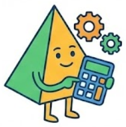

Módulo de inteligencia: La ruleta del redondeo
ESTADO: ALERTA LOGÍSTICA // CÓDIGO ÁMBAR
OBJETIVO: GESTIÓN DE CRISIS DE SUMINISTROS
Atención, equipos de consultoría.
Tenemos una situación de emergencia en el Almacén Central de Gaia. Un ciberataque ha dañado el software de gestión de pedidos. El sistema se ha reiniciado y, debido a un fallo crítico, solo acepta NÚMEROS ENTEROS para procesar las salidas de mercancía.
Tenemos una lista de pedidos urgentes con cantidades precisas (decimales) que deben salir hoy. No podemos detener la cadena de suministro, pero tampoco podemos introducir los datos exactos.
Vuestra misión es tomar el mando y decidir la política de aproximación de la empresa.
EL DILEMA MATEMÁTICO
El redondeo no es solo quitar números; es una decisión con consecuencias reales. Hoy operaréis bajo tres protocolos distintos para ver qué pasa cuando las matemáticas chocan con la realidad. Cada uno de los miembros de la consultoría desarrollará un protocolo diferente.
PROTOCOLO "EL TACAÑO" (Truncamiento)
Filosofía: Ahorro máximo.
Orden: Cortad siempre los decimales. Ignorad lo que hay detrás de la coma.
Riesgo: ¿Dejaremos a alguien con hambre?
PROTOCOLO "EL MATEMÁTICO" (Redondeo simétrico)
Filosofía: Equilibrio estadístico.
Orden: Buscad el valor más cercano. Si la décima es 5 o más, subid. Si es menos, bajad.
Riesgo: ¿El error se compensará o se acumulará?
PROTOCOLO "EL DERROCHADOR" (Exceso)
Filosofía: Servicio garantizado.
Orden: Redondead siempre hacia arriba. Que sobre, que no falte.
Riesgo: ¿Estamos desperdiciando recursos vitales?
HERRAMIENTAS AUTORIZADAS
- Hojas de Pedido de Emergencia.
- Calculadoras (para sumar los totales).
- Sentido ético (para evaluar las consecuencias).
¿Qué política salvará a Gaia hoy? ¿La austeridad, el equilibrio o la abundancia? Consultoras, el camión de reparto sale en 45 minutos.
Elegid vuestro protocolo y a calcular. 
Hoja de pedidos de emergencia
Debate: La ética del decimal
PREGUNTA CLAVE: ¿QUIÉN PAGA EL ERROR DE CÁLCULO?
Consultores, habéis visto lo que ocurre.
El equipo "Tacaño" ha ahorrado agua, pero ha dejado gente sin comer.
El equipo "Derrochador" ha alimentado a todos, pero ha quebrado la empresa.
En matemáticas escolares, 4,1 se redondea a 4. Punto.
En el mundo real, redondear 4,1 a 4 puede significar que un puente se caiga o que un paciente reciba menos medicina de la necesaria.
Hoy no sois alumnos/as. Sois el Comité de Ética de Gaia. Tenéis que decidir la norma de redondeo para situaciones de vida o muerte.
ESCENARIOS PARA EL DEBATE
1. EL CASO DE LA MEDICINA (Seguridad vital)
"Sois médicos. Tenéis que calcular la dosis de anestesia para un niño. El cálculo exacto da 4,2 mg. Si le dais de menos, se despertará en mitad de la operación. Si le dais de más, podría sufrir daño. Las jeringuillas solo marcan números enteros."
¿Qué hacéis? ¿Redondeáis a 4 (matemático) o subís a 5 (exceso)?
Reflexión: ¿Vale la pena el riesgo de "despertarse"?
2. EL CASO DEL PUENTE (Ingeniería civil)
"Sois ingenieros. Estáis calculando cuánto acero necesita un pilar para no derrumbarse con el viento. El cálculo exacto dice que necesita soportar 10100 toneladas. Vuestro proveedor vende vigas que soportan 10000 o 11000 toneladas."
¿Ahorráis dinero comprando la de 10000 (casi exacto) o gastáis el doble en la de 11000?
Reflexión: En ingeniería, ¿existe el "demasiado seguro"? (Concepto de coeficiente de seguridad).
3. EL CASO DEL VIAJE ESPACIAL (Economía extrema)
"Sois la NASA. Tenéis que enviar un cohete a Marte. Cada gramo extra de combustible cuesta 1 millón de dólares. El cálculo dice que necesitáis 50,1 toneladas de combustible para llegar."
Si cargáis 51 toneladas "por si acaso", el cohete pesa demasiado y no despega. Si cargáis 50, quizás no llegue.
Reflexión: ¿Cuándo es la precisión decimal más importante que el redondeo?
CONCLUSIÓN FINAL
En clase de matemáticas redondeamos al más cercano porque buscamos precisión estadística. Pero en la vida real, redondeamos según el contexto:
- Cuando la SEGURIDAD es lo primero (puentes, medicinas, comida) redondeamos por EXCESO (hacia arriba).
- Cuando la EFICIENCIA es lo primero (tiempo, concursos, récords) buscamos la PRECISIÓN máxima.
Como ingenieros de Gaia, vuestro trabajo no es solo calcular. Es decidir qué riesgo estáis dispuestos a asumir.
Módulo de inteligencia: El plato culpable
ESTADO: ANÁLISIS FORENSE // PRIORIDAD ALTA
OBJETIVO: INGENIERÍA INVERSA DEL "OBJETIVO"
Atención, equipo de consultoría.
Vuestra primera prueba de fuego ha comenzado. Antes de poder diseñar el futuro, debemos entender los errores del presente. La ignorancia es nuestro enemigo, y los datos, nuestra munición.
Para solucionar el problema del agua, primero debemos encontrar la fuga. Vuestro plato favorito no es solo comida; es una evidencia. Sabemos que consume demasiada agua, pero ¿quién es el verdadero culpable? ¿Es la carne? ¿Es el queso? ¿O es ese ingrediente "inocente" que nadie sospecha?
Vuestro trabajo hoy es de forenses. No vamos a cocinar; vamos a deconstruir.
LA MISIÓN DE HOY
LA AUTOPSIA DEL PLATO (Desglose)
Elegid vuestro plato de comida rápida preferido (plato principal, guarnición y postre). Olvidad los nombres comerciales. No existe la "Lasaña". Existe una estructura compuesta por láminas de pasta, carne picada, tomate triturado, bechamel (harina + leche) y queso.
Acción: Desmontad el plato hasta llegar a los ingredientes base.
LA CUANTIFICACIÓN (Pesaje de precisión)
En el laboratorio de Gaia no usamos "puñados" ni "pizcas". Usamos el Sistema Internacional.
Acción: Estimad o pesad la masa de cada ingrediente.
Norma: Prohibido usar gramos. Debéis traducir todo a KILOGRAMOS (kg) usando decimales exactos. (Ejemplo: No escribáis 250g. Escribid 0,250 kg).
EL INTERROGATORIO (Investigación)
Cruzad vuestros datos con la Base de Datos Gaia. Buscad el factor hídrico (l/kg) de cada sospechoso.
Pregunta: ¿Cuántos litros de agua cuesta producir 1 kg de ese ingrediente?
CÁLCULO FORENSE (La culpa hídrica)
Es hora de la verdad. Multiplicad la cantidad exacta (kg) por el coste hídrico (l/kg).
Objetivo: Hallar cuánta agua ha costado exactamente esa porción de tomate o de carne.
Acción: Sumad todas las culpas para obtener la huella total del plato elegido.
ADVERTENCIA DE SEGURIDAD MATEMÁTICA: EL EFECTO MARIPOSA DECIMAL
Prestad atención extrema a la coma decimal. Un error de posición aquí es catastrófico.
0,2 kg de carne = 3000 litros de agua (aprox).
2,0 kg de carne = 30000 litros de agua.
Un solo decimal mal puesto puede inundar el sistema. Verificad cada cifra.
HERRAMIENTAS AUTORIZADAS
- Calculadora científica.
- Hoja de registro de datos.
- Hoja de cálculo.
BASE DE DATOS DE GAIA
Para obtener el factor de huella hídrica de cada alimento podéis usar las siguientes herramientas:
- Galería de productos de la web Water footprint network
- Calculadora de huella hídrica de CAEM
- Para cualquier otro ingrediente que no encontréis en las herramientas anteriores podéis consultar a la Dirección de Gaia
¿Estáis listos para ver la verdad oculta tras vuestra comida?
Iniciad la deconstrucción.
Ficha del crimen
FICHA DEL CRIMEN
FECHA: __/__/____
La prueba del delito
| INGREDIENTE | MASA (Kg) Ej: 0,150 |
FACTOR (l/Kg) Base de datos |
HUELLA TOTAL (L) Masa x factor |
|---|---|---|---|
| IMPACTO HÍDRICO GLOBAL DEL PLATO: | ___________ L | ||
El sospechoso principal (mayor consumidor de agua) es: ___________________________
Representa aproximadamente el ______% del total del plato.
Ficha del crimen: Ejemplo
FICHA DEL CRIMEN (EJEMPLO)
FECHA: 09/01/202X
| INGREDIENTE | MASA (Kg) | FACTOR (l/Kg) | HUELLA TOTAL (l) |
|---|---|---|---|
| Carne picada (Vacuno) | 0,150 | 15.400 | 2.310 |
| Pan de burguer | 0,080 | 1.600 | 128 |
| Queso cheddar | 0,040 | 5.000 | 200 |
| Bacon (Cerdo) | 0,030 | 6.000 | 180 |
| Lechuga / Tomate | 0,050 | 240 | 12 |
| IMPACTO HÍDRICO GLOBAL DEL PLATO: | 2.830 l | ||
El sospechoso principal (mayor consumidor de agua) es: CARNE DE VACUNO
Representa aproximadamente el 81,6% del total del plato.
Gaia Forensic